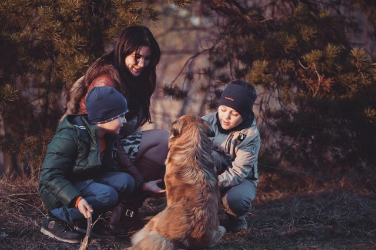

Adoption Process
We try to make our adoption process as quick as possible, while also taking care of our dogs and making sure they go to the right home. Our adoption flow goes something like this:
- Submit Application
- In person visit/Consultation
- Take home your new dog
- Follow up call
Adoption Timeline
We have a ton of applications every week, so please be patient while waiting to come for your in person visit! We do our best to find the best fit for each of our dogs, making sure that the dogs are not going to end up back in a shelter in a few months. We take the well being of these dogs seriously!
Finding the Right Fit
We strongly encourage you to do your research on the breeds you are interested in adopting. It is very common to find dogs in shelters that have been surrendered by owners that didn't do their research. They brought home a tiny puppy that grew into a very energetic dog that they didn't have the time and space to properly care for. In your in-person visit, we will also make sure that the dog you are interested in is indeed a good fit.
Here are a few things we check for while looking at your application:
Indoor/Outdoor Space
Size of family/Age Of Children
Experience Owning Pets
